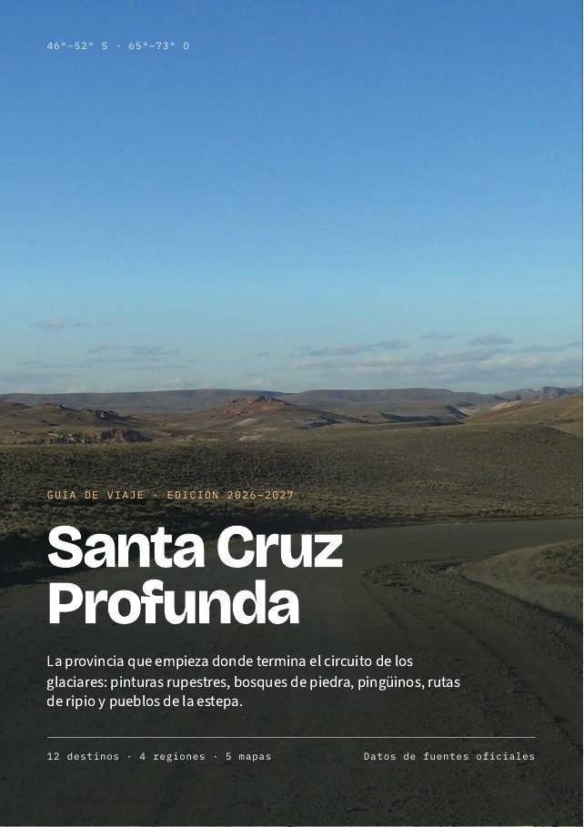

Guia de viagem · Edição 2026–2027 · PDF
Santa Cruz Profunda: o guia em PDF
Pinturas rupestres, florestas de pedra, pinguins, estradas de cascalho e cidadezinhas da estepe: a província de Santa Cruz pela Ruta 40 e pela Ruta 3, num guia para baixar e usar sem sinal.
- 65páginas (A5)
- 12destinos
- 4regiões
- 5mapas
$15.000 ARS
Comprar o guia com Mercado Pago
Arquivo PDF para uso pessoal. Primeira edição, outubro de 2026.
O que inclui
- Como usar este guia e um mapa geral da província.
- Planeje sua viagem: como chegar, quando ir, segurança na estrada e telefones de emergência.
- Uma ficha por destino com o essencial (como chegar, quando ir, onde se informar), o que fazer e a lista de fontes.
- Um mapa por região.
- Três roteiros sugeridos: Noroeste e cordilheira (7 dias), Costa atlântica (7 dias) e A grande volta (14 dias).
- Tabela de distâncias de referência, diretório de contatos oficiais, fontes e créditos fotográficos.
Os 12 destinos, por região
Região 1 · Noroeste
- Perito Moreno
- Los Antiguos
- Parque Nacional Patagonia
- Ruta 41 e Lago Posadas
- Cueva de las Manos
Região 2 · Cordilheira central
- Gobernador Gregores
- Parque Nacional Perito Moreno
Região 3 · Costa norte e centro
- Puerto Deseado
- Parque Nacional Bosques Petrificados de Jaramillo
- Puerto San Julián e Laguna del Carbón
Região 4 · Costa sul
- Piedra Buena e Parque Nacional Monte León
- Río Gallegos
- Laguna Azul e Cabo Vírgenes
Com fontes oficiais
As informações foram consultadas em outubro de 2026 em fontes oficiais (Administração de Parques Nacionais, UNESCO, Visit Argentina/INPROTUR, Governo nacional) e em mídias e guias de referência. Cada destino termina com suas fontes para você conferir qualquer dado. As fotos são do Wikimedia Commons, com licenças livres.